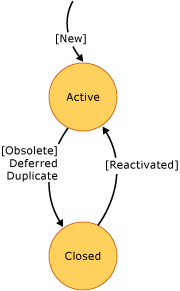

Your team can use shared steps to streamline definition and maintenance of manual test cases. Many tests require the same sequence of steps to be performed for multiple test cases. By creating shared steps, you can define a sequence of steps once and insert it into many test cases. For example, if each test case requires a tester to log on to the application, you can create a set of shared steps to perform these actions. You can then add the shared steps to each test case and run the steps using Test Runner.
|
|
|---|
|
You can define a test case by using Team Explorer, but it is best if you define test cases by using Microsoft Test Manager. You can access Microsoft Test Manager from Visual Studio Test Professional 2010, Visual Studio 2010 Professional, or Visual Studio 2010 Ultimate. For more information, see Creating and Managing Tests. To specify the sequence of action steps that define a set of shared steps, you must use Microsoft Test Manager. You can view and modify other fields that are defined for test cases and shared steps by using Team Explorer or Team Web Access. However, you cannot modify the fields that appear on the Stepstab in these clients. |
Because you define shared steps only to streamline the definition of manual test cases, it is best that you define shared steps by using Microsoft Test Manager. For more information about how to define and use shared steps, see the topics that are listed in the following table.
|
Task |
Related topics |
|---|---|
|
Reduce test maintenance by sharing test steps across test cases . You define shared steps to capture a sequence of test and validation steps that are inserted into the test steps of two or more manual test cases. |
|
|
Run tests multiple times with different data. You can add parameters to your shared steps to use them in test cases where you want to run the same test multiple times with different data. |
|
|
Speed up test efforts. You can make testing go more quickly by recording and playing back the repeated steps of your manual tests. |
|
|
Run manual tests from a test plan. You can run manual tests from your test plan by using Test Runner to record whether each step passes or fails. You can save the test outcome and any data that is collected when you run the test. |
|
|
Close shared steps that are no longer needed. If you have shared steps that are not being used, you can change the state from active to closed. Closed shared steps still exist in your team project, but they appear only in the results list for queries that specifically find shared steps that are closed. |
Required Permissions
To view shared steps, you must be a member of the Readers group or your View work items in this nodemust be set to Allow. To create or modify shared steps, you must be a member of the Contributorsgroup or your Edit work items in this nodepermissions must be set to Allow . For more information, see Managing Permissions.
 Field
Reference
Field
Reference
For more information about the data fields and controls that are provided within the work item form for shared steps, see the following topics:
Shared
Steps Workflow
You can use the Activeand Closedstates to distinguish shared steps that are being used from shared steps that are not being used. All shared steps are created in the Activestate. A shared steps work item is useful only if it is inserted into one or more test cases. You change the state to Closedwhen all the test cases that contain the shared steps are also closed.
After you save a shared steps work item, you can change its state from Activeto Closed.
|
Typical workflow progression:
Additional workflow transitions states:
|
Shared Steps State Diagram  |
Active (New)
Shared steps remain active as long as the test cases into which they are inserted are not closed.
The following data fields are automatically captured when you create shared steps:
-
Created By: Name of the team member who created the work item.
-
Created Date: Date and time when the work item was created, as recorded by the server clock.
From Active to Closed
You can close an active shared steps work item because of one of the following reasons:
|
Reason |
When to use |
Additional actions to take |
|---|---|---|
|
Obsolete(default) |
The shared steps is no longer required for acceptance testing of use casees. |
Verify that all test cases that reference the shared steps are Closed . |
|
Deferred |
The shared steps will not be run during the current product cycle or iteration. You can also specify this reason when the test cases in which the shared steps are inserted are set to Deferred. |
None. |
|
Duplicate |
The shared steps work item is a duplicate of another shared steps work item. |
Create a link to the duplicate work item that remains active. |
The following data fields are captured when you close a shared steps work item:
-
Closed By: Name of the team member who closed the work item.
-
Closed Date: Date and time when the work item was closed, as recorded by the server clock.
-
State Change Date: Date and time when the state of the work item was changed.
Closed
You can reactivate a shared steps work item.
From Closed to Active
When you reactivate a shared steps work item, the Reason field is automatically set to Reactivated.
|
Reason |
When to use |
Additional actions to take |
|---|---|---|
|
Reactivated |
The shared steps is required to support definition of a test case. |
Review all action and validation steps to make sure that they support the test cases where the shared steps are inserted. |
The following data fields are captured when you reactivate a shared steps work item:
-
Activated By: Name of the team member who reactivated the work item.
-
Activated Date: Date and time when the work item was reactivated, as recorded by the server clock.
-
State Change Date: Date and time when the state of the work item was changed.